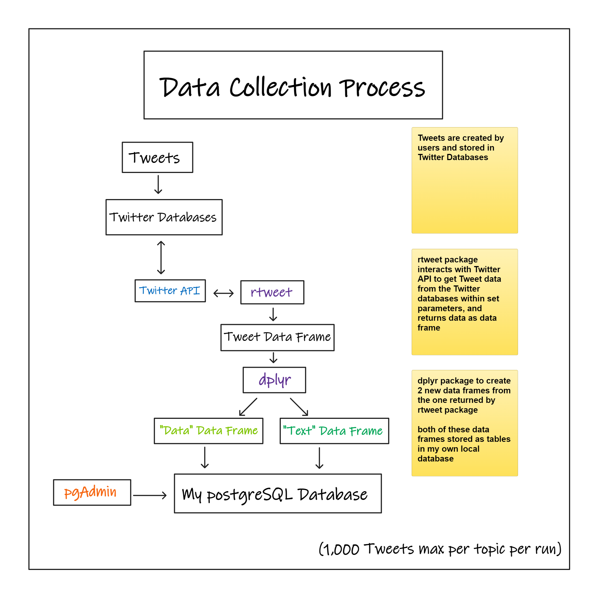
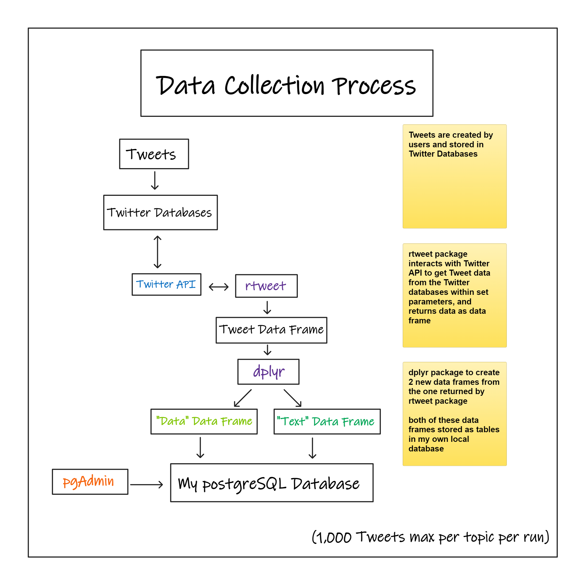
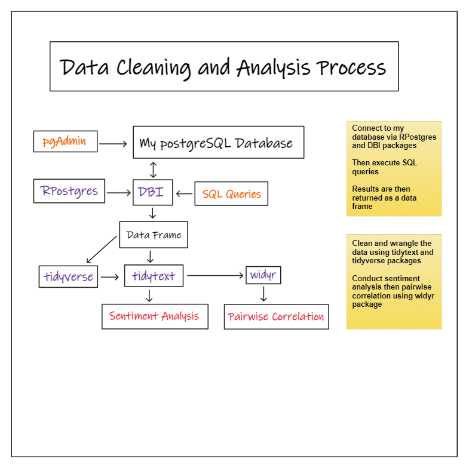
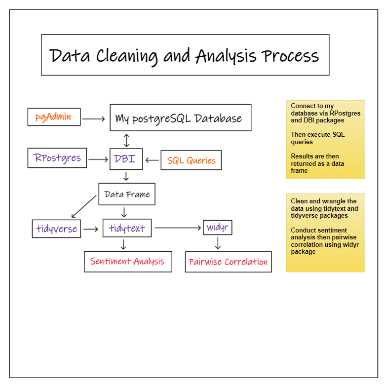

Why use R and PostgreSQL together?
Importing data from a database directly into R for analysis or reporting allows for the optimizing of workflows. The ability to combine SQL and R is huge for extracting insights from your database.
There are countless use cases and workflows that can implemented once you pair R and PostgreSQL and I will share one of my recent workflows.
Tweet sentiment analysis (project workflow)
In this workflow, I use various packages and methods to scrape Tweets from Twitter in
R. I split the data into two separate data frames, one with more text related Tweet data, the other for the Tweet metadata. I gave each data frame a primary key, for identification purposes, and for futureSQLjoins. Next I save the two data frames of scraped data in a PostgreSQL database. I can add more data or I could move on to the analysis step- 
- 
When I move on to the analysis stage I first connect to my database and then I can begin executing
SQLqueries, which are returned as data frames inR, meaning I can immediately use the results of a query and visualize them withggplot2or continue cleaning and wrangling the data with packages liketidytextordplyr.- 
- 
How to connect to a PostgreSQL database with R
Packages
You will need the DBI, RPostgres, and dplyr packages. dplyr comes with the tidyverse meta package so make sure it is updated if you already have tidyverse.
Here are the packages and links to their documentation websites:
| Package | Documentation |
|---|---|
| DBI | https://dbi.r-dbi.org/ |
| RPostgres | https://rpostgres.r-dbi.org/ |
| dplyr | https://dplyr.tidyverse.org/ |
You can use this code to install these packages:
install.packages("DBI")
install.packages("RPostgres")
install.packages("dplyr")Once you install the packages you can go ahead and load the libraries in a R script, or in a R chunk in R Markdown or Quarto.
library(DBI)
library(RPostgres)
library(dplyr)Connecting to a database
After loading the packages you need to tell them what database to connect to, and your credentials to connect. Here is what that code looks like, and you just have to fill in your credentials for each argument.
# establish connection with postgres data base
con <- dbConnect(RPostgres::Postgres(),dbname = 'db_name',
host = 'address', # i.e. 'ec2-54-83-201-96.compute-1.amazonaws.com'
port = 5432, # or any other port specified by your DBA
user = 'username',
password = 'password')The database you connect to does not have to be “online”, as I connect to a local PostgreSQL database that I set up on my personal machine. Here is what the code looks like when you connect to a local PostgreSQL database, and don’t mind my password :)
con <- dbConnect(RPostgres::Postgres(),dbname = 'postgres',
host = 'localhost',
port = 5432,
user = 'postgres',
password = 'RIsBetterThanPython')How to create tables
You have created the connection parameters for your PostgreSQL database in R but now lets interact with the database.
The dbWriteTable() function allows you to essentially “export” R data frames to your database, without even opening up pgadmin4.
Here is an example of code that creates tables in PostgreSQL from R
# create tables in database
dbWriteTable(con, "rocketleague_data", df1, append = TRUE)
dbWriteTable(con, "rocketleague_text", df2, append = TRUE)If you looked at my Tweet sentiment analysis workflow, then this may seem familiar. But this code is calling the dbWriteTable() function, with 4 arguments:
Argument 1 - the connection parameters
Argument 2 - name to give table in
pgadmin4Argument 3 - name of the data frame in
RArgument 4 -
append = TRUE[when
TRUE, if an existing table with the name exists it will keep the existing records and add these additional records]
How to execute SQL queries
When I create my SQL queries, I typically create them in pgadmin4 using the query tool first. I do this to make sure my query works as intended, and is optimized. I then copy and paste it into my dbSendQuery() function template which is shown below.
res <- dbSendQuery(con, "
# paste sql here
")
query_df <- dbFetch(res)The template shows the dbSendQuery() function with two arguments:
Argument 1 - the connection parameters
Argument 2 -
SQLquery in quotes
This function is then saved as an object called res
The next function is dbFetch(), which executes a SQL statement on the database connection. This function has the object res as it’s sole argument and it execute the SQL statement and return a data frame in R called query_df.
Here is an example query:
res <- dbSendQuery(con, "
SELECT DISTINCT(t.id_str), text, display_text_range, retweet_count, favorite_count
FROM rocketleague_text AS t
INNER JOIN rocketleague_data AS d
ON d.id_str = t.id_str
-- DISTINCT(t.id_str) eliminates duplicates
")
query_df <- dbFetch(res)Finding out I was able to connect to PostgreSQL databases with R was not only very cool, but eye opening because of the implications.
The ability to combine powerful data tools like this can allow you flexibility.
If I want to do a quick query, then I can use the query tool in
pgadmin4.But if I want to gather more strategic insights, clean / wrangle the data, create visuals with packages like
ggplot2, or work in RStudio- I have that option.
Contact me
Reach out to me if you have any feedback, questions, or suggestions! I am open to collaborating with others on projects and expanding my network! Until next post!